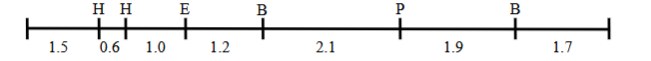
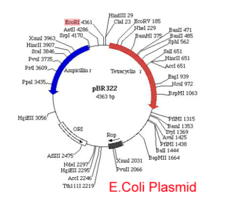
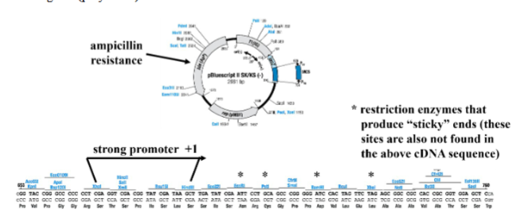
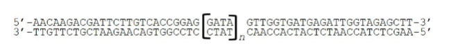
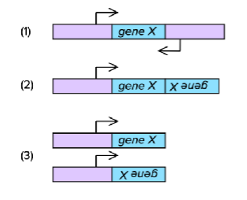
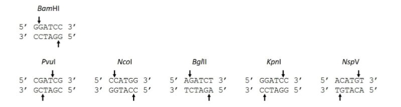
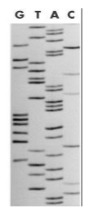

Comprehensive Review (Questions Shuffled on Refresh)
Question: MicroRNAs are small RNA molecules that bind to the 3' end of mRNAs and suppress translation. Some eukaryotic mRNAs have internal ribosome-binding sites downstream of the 5' cap. In one investigation, miRNAs did not suppress the translation of ribosomes that had attached to internal ribosome-binding sites. What does this finding suggest about how miRNAs suppress translation? (2 marks)
In eukaryotic cells, the ribosome usually binds at the 5' cap of the mRNA, but in a small percentage of mRNAs the ribosome binds at an internal site (at an internal ribosome entry site or IRES). The observation described above suggests that the miRNAs in this study affected translation by preventing the binding of ribosomes to the 5' cap region of the mRNA, perhaps by interfering with the ability of the ribosomes or cap-binding proteins to recognize the 5' cap. It has been demonstrated that recognition of the 5' cap involves interactions between proteins associated with the poly(A) tail and cap-binding proteins. The miRNA could interfere with this interaction.
Question: A bacterial artificial chromosome (BAC) contains a multiple cloning site (MCS) that has a single site for EcoRI (5' G^AATTC 3'). The sequence of one strand of the MCS region containing the EcoRI restriction site is shown below; the dots indicate that most of the BAC backbone sequence is not shown.
5' ...CGGATCCCCTAAGATGAATTCCGCGCGCATCGGC...3'
Suppose you make a genomic library by inserting EcoRI-digested fragments of a genome into EcoRI-digested BAC. Write out the sequences of two different primers you would use to sequence (in separate reactions) the two ends of any clone in the genomic library. These primers should be as long as possible based on the information given. (2 marks)
5'-CGGATCCCCTAAGATGAATTC-3'
5'-GCCGATGCGCGCGGAATTC-3'
NOTE: The full EcoRI restriction sites should be included to make the primers as long as possible because upon ligation of insert, which was digested with EcoRI, the insert will be flanked by the EcoRI sites.
Question: To properly annotate a genome sequence, why do you need to sequence a very large number of clones from many distinct cDNA libraries generated from different tissues?
To annotate a genome, you would have to sequence many clones from many cDNA libraries, because different genes are transcribed in different tissues and because some genes are transcribed only rarely in any tissue. Also, pre-mRNA transcripts are subject to alternative splicing and the alternative spliced products can vary from tissue to tissue.
Question: You have been given the following restriction map of a linear 10-kilobasepair piece of DNA. E=EcoRI, H=HindIII, B=BamHI, P=PstI. The distance between each restriction site is shown below the line (in kilobasepairs, 1 kilobasepair = 10,000 bp).

What sized fragments on an ethidium bromide-stained gel would you see after digesting this linear DNA fragment with each of the following restriction enzymes or combinations of enzymes: (2 marks)
(1) EcoRI
(2) BamHI + HindIII
(1) EcoRI: 3.1 + 6.9 kb (1 mark)
(2) BamHI + HindIII: 1.5 + 0.6 + 2.2 + 4.0 + 1.7 kb (1 mark)
Question: Shown below is the restriction enzyme map for the plasmid pBR322. The numbers refer to base pairs. The total size of the plasmid is 4363 base pairs.

a) Determine the number and sizes of the restriction fragments made by the action of: (2 marks)
i) EcoRI
ii) AccI
b) You want to insert a DNA fragment and select for it in transformed bacteria by using resistance to tetracycline and sensitivity to ampicillin as a way of identifying the recombinant plasmid. What restriction endonucleases might be useful for this purpose? (2 marks)
a) i) EcoRI: One fragment of 4363 bp (1 mark).
ii) AccI: Two fragments of 1595 bp and 2768 bp (1 mark).
b) You need to clone into the coding region of ampicillin to select for sensitivity (but first test for the presence of plasmid with tetracycline resistance). ScaI, PvuI, PstI, and PpaI would be useful for this purpose as they cut within the ampicillin gene and are unique sites. XmnI is not good as it cuts elsewhere in the plasmid such that the origin of replication would be eliminated. HincII is not good as it also cuts within the tetracycline gene.
Question: You have recently identified a small protein hormone that can be used to treat certain growth defects in infants. The sequence of the cDNA that encodes for this protein is shown below with the start codon (ATG) and the stop codon (TAA) indicated:
5'-AAATTATGTCGACAGAAATGGAGGTCGTTAGTGTTCTTAAGTAACAATT-3'
You wish to express this protein in E. coli to isolate large quantities of this hormone. For this, you wish to use the highly versatile pBluescript II cloning vector (shown below). You have already cloned a strong promoter for gene expression between the XhoI and HindIII sites of the multiple cloning site (polylinker) in the direction as shown below.

Describe ALL the steps, including primer sequences and enzymes, required to directionally clone the cDNA sequence downstream of the promoter, from isolating and amplifying the cDNA sequence to selection of bacteria carrying the recombinant plasmid (step-by-step explanation, in the correct order). Many answers are possible.
Primers for amplification:
Primer 1: 5'-ATGTCGACAGAAATGGAGGT-3', Tm = 58°C (manual method)
Primer 2: 5'-TTACTTAAGAACACTAACGACC-3', Tm = 60°C (manual method)
*these primers could vary, but the Tm's match well with second primer being longer than the first primer
BUT, should add restriction enzyme sites for ease of directionally cloning. Answers could vary but EcoRI on primer 1 and BamH1 on primer 2 would work, including having coding region in correct orientation relative to the strong promoter. Also, should add 3-6 nucleotides on 5' ends to allow for efficient cleavage of the amplified product.
Primer 1 + restriction sites / extension: 5'-CACGAATTCATGTCGACAGAAATGGAGGT-3'
Primer 2 + restriction sites / extension: 5'-ACAGGATCCTTACTTAAGAACACTAACGACC -3'
STEPS after designing primers:
*0.5 marks for each correct point for total of 5 marks. Correct order is important.
Question: List three characteristics required of genetic material. For each characteristic, indicate how the structure of DNA helps us to understand the characteristic. (3 marks)
1 mark for each answer, fully explained.
Question: Name the three major modifications of eukaryotic mRNA nascent transcripts before the mature mRNA is transported to the cytoplasm. In addition, describe the purpose of each modification as it relates to protein production. (3 marks)
For each, 0.5 marks for naming the modification and 0.5 marks for accurately describing the purpose of the modification.
Question: Short Tandem Repeat (STR) analysis is a common molecular genetic method used to compare polymorphic allele repeats at specific loci in genomic DNA between two or more samples. A short tandem repeat is a microsatellite with repeat units that are 2 to 7 base pairs in length, with the number of repeats varying among individuals. This makes STRs effective for human identification purposes (the basis of DNA forensics). OTG is a hypothetical polymorphic short tandem repeat (STR) locus in humans with a repeating nucleotide sequence unit of GATA. The polymorphic region is shown below as a box with 25 bp of flanking DNA sequence on each side. The n represents the number of times [GATA] on the top strand is repeated (the polymorphic part of the STR locus). (4 marks total)

a) You plan to use PCR to genotype individuals for the OTG locus. If the PCR primers must be 20 nucleotides long, design a pair of primers to amplify the OTG locus? Design the primers such that they each anneal right beside the [GATA] repeats (i.e. not at the ends or middle of the DNA arms). (2 marks)
b) What are the approximate melting temperatures of your primers? Show your calculations. (1 mark)
c) Consider OTG alleles with 12 and 15 copies of the repeating [GATA] unit. Using the primers you have designed, what will be the sizes in base pairs of the PCR products for each allele? In other words, if you run the PCR reaction on an electrophoresis gel, what would be the exact sizes of the two bands? (1 mark)
a)
5'-GACGATTCTTGTCACCGGAG-3' [1 mark]
5'-CTACCAATCTCATCACCAAC-3' [1 mark]
Be sure that they have their 5' and 3' orientations correct. If unlabelled, then by convention it is 5' left and 3' right.
b) Estimate using equation: Tm = 2°C * (A + T) + 4°C * (C + G)
Primer 1: Tm = 2°C * (9) + 4°C * (11) = 62°C [0.5 mark]
Primer 2: Tm = 2°C * (11) + 4°C * (9) = 58°C [0.5 mark]
*Give marks if the calculated Tm's correctly even if their primer sequences were incorrect from part (a).
c) Allele 1: 20 + (12 × 4) + 20 = 88 bp [0.5 mark]
Allele 2: 20 + (15 × 4) + 20 = 100 bp [0.5 mark]
Question: Compare and contrast the operation of promoters and enhancers in affecting transcription of genes in eukaryotes. Include a discussion of how they operate and from what positions with respect to the transcription initiation site and the roles of each in bringing about and regulating transcription. (3 marks)
Both promoters and enhancers are DNA sequences that regulate transcription of adjacent DNA sequences. Both are needed for a high level of transcription of a gene. Both serve as binding sites for proteins that are involved in bringing about and regulating transcription. (1 mark)
Promoters are found just upstream of the transcription start site and need to be in a specific orientation with respect to the transcription start site. Eukaryotic promoters typically include a core promoter located just upstream of the transcription start site, as well as a regulatory promoter located immediately upstream of the core promoter. The core promoter allows for binding of the basal transcription apparatus (including RNA polymerase). The core promoter by itself usually can only bring about a low level of transcription. The regulatory promoter allows for the binding of a variety of additional transcription factors that can interact with basal transcription factors at the core promoter to bring about regulated gene expression at a higher level. The activity of promoters is constrained in that they can only operate from a specific position and in a specific orientation with respect to the transcription start site. (1 mark)
Enhancers are DNA sequences that can be found near or far from and upstream or downstream of the transcription initiation site. Regulatory proteins bind to enhancers and interact with the transcription apparatus at a promoter to bring about a higher level of transcription. Because of the ability of enhancers to act at various distances and positions with respect to the promoter, a large number of enhancers can be found on a single gene, allowing the gene to be responsive to a variety of different signals and conditions in the cell. (1 mark)
Question: Indicate the sequences of two 18-residue primers that could be used to amplify the central 40-nucleotide region of the following 50-nucleotide DNA template by PCR (final amplicon size = 40 bp). Be sure to designate the 5' and 3' ends of the primers.
5'-AGCTGGACCACTGATCATTGACTGCTAGCGTCAGTCCTAGTAGACTGACG-3'
3'-TCGACCTGGTGACTAGTAACTGACGATCGCAGTCAGGATCATCTGACTGC-5'
5'-GACCACTGATCATTGACT-3'
5'-GTCTACTAGGACTGACGC-3'
Question: Given the following short single-stranded DNA sequence (5'->3')
5'ATGCCGTAGTCGATCATTACGATAGCATAGCACAGGGATCCACATGCACACACACGACATAGGACAGATAGCAT-3'
What oligonucleotide primers (make each 20 nucleotides in length) would be required for PCR amplification of this entire fragment of DNA? Be sure to designate the 5' and 3' ends of the primers. What would be the Tm of these primers using the estimated (manual) calculation method? Search online for an 'oligo tm calculator' and then use that to re-calculate the Tm's of these primers.
Primer 1: 5'-ATGCCGTAGTCGATCATTAC-3'
Primer 2: 5'-ATGCTATCTGTCCTATGTCG-3'
You can estimate the Tm using the formula of 2°C for each A and T and 4°C for each G and C:
Tm = 2°C * (A + T) + 4°C * (C + G)
Primer 1: Tm = 2°C * (11) + 4°C * (9) = 58°C
Primer 2: Tm = 2°C * (11) + 4°C * (9) = 58°C
A more sophisticated formula, taking into account exact sequence and base-stacking parameters, will give a more accurate prediction of Tms. If picking 'Taq DNA Polymerase with Standard Taq Buffer' with 200nM primer concentration, the calculated Tms are: Primer 1: Tm = 53°C, Primer 2: Tm = 52°C. Annealing temperature would then be about 47°C. The annealing temperature for the PCR should be set 3-6°C lower than the estimated Tm to allow maximum binding of primers, but not too low so as to prevent mis-annealing to target sites that are not perfectly complementary.
Question: Mature mRNA from eukaryotic cells is often purified from other components in the cell (e.g. rRNAs) with the use of columns containing oligo (dT) cellulose. These columns contain short segments of single-stranded deoxyribose thymidylate residues, oligo (dT), attached to a cellulose matrix. Explain the rationale for use of these columns to purify mature mRNA from a mixture of components.
During maturation, eukaryotic mRNA precursors are modified at their 3' ends by the addition of a poly(A) tail. When a mixture of components from a cell extract is passed over the column, the poly(A) tail will hybridize with oligo(dT) on the column. The other components in the cell extract will pass through the column.
Question: A biotechnology company has recently discovered a 10-amino acid polypeptide that can modulate neurotransmission in humans. The sequence of one of the DNA strands of this small gene is shown below. Note: this gene contains no introns.
5'-ACATTCGATTACGAAGTGAACCCAGTCTTCTCACAAATCATGGTAACCGCTC-3'
(a) What is the sequence of the open reading frame (start to stop codons, inclusively) in the mRNA transcript?
(b) What is the predicted amino sequence of the polypeptide?
(a) 5'-AUG AUU UGU GAG AAG ACU GGG UUC ACU UCG UAA-3'
(b) N-Met-Ile-Cys-Glu-Lys-Thr-Gly-Phe-Thr-Ser-C (or MICEKTGFTS)
Question: List and briefly discuss three features that make miRNAs especially useful regulators of gene expression.
First, a single miRNA can regulate a whole set of different mRNAs, so long as the mRNAs carry a common sequence (e.g. in their 3-UTRs). Second, regulation by miRNAs can be combinatorial (multiple distinct miRNAs targeting the same mRNA), allowing incremental changes in translation of a target mRNA, which will fine-tune gene expression. Third, a miRNA occupies very little space in the genome compared with a protein-coding gene (e.g. transcription factor). Fourth, they exert their influence rapidly by affecting mRNA stability or mRNA translation, which is important for rapid responses (transcriptional regulation via enhancers/activators/repressors takes longer).
Question: As an alternative to random mutagenesis, scientists can screen for mutant phenotypes in a high-throughput manner by systematically knocking down individual gene functions using RNA interference (RNAi). Suggest three distinct ways to construct transgenes that would result in siRNAs to knock down a gene (e.g. in fruit flies, C. elegans, human cell lines, or plants).

Another method, usually applied to plants, would be to insert the gene segment of interest into the genome of a RNA virus. Transfer of the transgenic RNA virus either directly to the plant leaves or indirectly would result in gene silencing. An example using Potato Virus X is shown below.
The diagrams show three different ways to generate double-stranded RNA corresponding to a gene that should knock out or knock down the gene's expression by RNAi. In the diagrams, the purple rectangles corresponds to a regulatory region (enhancer and promoter) and the blue rectangles are all or part of a gene's cDNA. The arrows represent the direction RNA polymerase would travel in transcribing the gene X sequences starting at each promoter. All would generate double strand RNA, which would trigger the production siRNAs targeting the gene segment used in the construct.
Question: On your computer, explore miRBase (www.mirbase.org)
a) Search for the plant miRNA family called miR398. You should see many hits from various plant species. Of these hits, what is the hairpin (stem-loop) sequence of ath-MIR398b (accession MI0001018) from the model plant Arabidopsis thaliana? Paste the linear (unfolded) sequence below.
b) What do the capitalized sequences in blue represent?
c) What is the sequence of the mature ath-MIR398b that has been experimentally determined?
d) What do the predicted target mRNAs of ath-MIR398b encode? (protein names)
a) uggaucucgacAGGGUUGAUGAUAGAACACACgaguaucaacggcuguaaugacgcuacgucauuguuacagcucucguuuucaUGUGUUCUCAGGUCACCCCUGcugagcucuu (written 5' to 3')
b) They represent part of the stem of the pre-miRNA. They base pair with each other due to their almost perfect complementary. One of these sequences will become the single-stranded mature ath-MIR398b complexed in RISC.
c) 5'- UGUGUUCUCAGGUCACCCCUG-3'
d) The miR398 of miRNAs are predicted to target mRNAs coding for copper superoxide dismutases and cytochrome C oxidase subunit V. (see comments section of the webpage)
Question: How could miRNAs be used in agricultural biotechnology? Propose a specific crop trait to alter using a real or hypothetical miRNA and be as specific as possible. What are potential risks of using miRNAs for this type of agricultural application?
Some possible crop traits to target (other answers possible):
Some potential risks include (other answers possible):
Question: Explain how each of the following is used in cloning using a plasmid (recombinant DNA constructs):
a) antibiotic resistance genes
b) origin of replication
c) multiple cloning site
a) Antibiotic resistance genes: Antibiotic resistance genes are used to detect cells that contain recombinant DNA (transformed cells). Cell mixtures (ones that have taken up plasmid and ones that have not) are plated on media containing antibiotics (e.g. ampicillin). The cells that grow in the presence of antibiotic contain the plasmid.
b) Origin of replication: An origin of replication is a segment of DNA that allows initiation of replication of the plasmid so that the plasmid DNA is efficiently replicated and thus amplified in the host cells. The origin needs to be specific for the host cells. Plasmids are typically present in multiple copies per cell (10s to 100s of copies per cell depending on the plasmid / origin of replication).
c) Multiple cloning site: A multiple cloning site is a series of unique restriction sites situated side-by-side in a plasmid that allows convenient insertion of foreign segments of DNA digested with the same restriction sites. This often allows for directional cloning using two different restriction sites that have distinct cohesive ends.
Question: The following shows the cleavage sites of several restriction endonucleases. You cut a plasmid vector using the BamHI restriction nuclease. Which of the five restriction endonucleases shown on the second row can generate an insert fragment that can be directly ligated into this BamHI-digested plasmid with the addition of only DNA ligase and ATP? In other words, which of the five restriction enzymes produces compatible cohesive ends with BamHI? Explain.

BglII. The 5'-overhangs produced by BamHI and BglII are the same. It is important to realize that these two enzymes cut asymmetrically in the same orientation, both producing 5' overhangs that can then base-pair with each other. KpnI does not work because it produces 3' overhangs, despite the central 4 nucleotides being the same as BamHI and BglII. Also, note that the sequence generated after ligation of the vector and insert (5'-GGATCT-3' on each side of the insert) can then no longer be cut by either BamHI or BglII. This new 6-base pair nucleotide sequence is neither a BamHI or a BglII recognition site.
Question: A biotechnology company has recently discovered a 13-amino acid polypeptide that stimulates milk production in cows. A sequence of DNA containing the open reading frame of the peptide is shown below with the start (ATG) and stop (TAA) codons underlined (RNA-like strand). There are no introns.
5'-GTACGATGGGTACTTGTGAGAAGAGCACTGGGTTCACTGCGTGTTAATCGAA-3'
(a) Indicate the sequences of the two 20-nucleotide primers that would be used to amplify by PCR the 42-base pair region containing the open reading frame (start to stop codons, inclusively). Be sure to designate the 5' and 3' ends of the primers.
(b) Calculate the Tm of each of your primers using the manual method shown in class.
(c) What would be the sequences of the primers if you wanted to use HindIII (A↓AGCTT) and EcoRI (G↓AATTC) to directionally sub-clone the amplified product into a plasmid digested with the corresponding enzymes, such that the HindIII site is next to the promoter and the EcoRI site is next to the transcription terminator?
(d) Provide the sequence of the amplified DNA segment after it has been digested with HindIII and EcoRI. Note that the arrows in the restriction sites denoted above indicate the sites of cleavage. Provide both the top and bottom complimentary strands (duplexed together) and designate the 5' and 3' ends.
(a) Primer 1: 5'-ATGGGTACTTGTGAGAAGAG-3'
Primer 2: 5'-TTAACACGCAGTGAACCCAG-3'
(b) Primer 1: 58 °C
Primer 2: 60 °C
(c) 5'-GTCAAGCTTATGGGTACTTGTGAGAAGAG-3'
5'-CACGAATTCTTAACACGCAGTGAACCCAG-3'
*restriction enzymes generally do not cut well at the very ends of DNA. Therefore, you should add 3-6 nucleotides at the very 5' ends of each primer in addition to the restriction site (as shown in answer above). This short sequence can pretty much be random (i.e. doesn't have to be 5'-GTC-3' or 5'-CAC-3' in primer 1 and 2, respectively), but you need to maintain reasonably good overall primer design (e.g. 40-60% GC content).
(d) 5'-AGCTTATGGGTACTTGTGAGAAGAGCACTGGGTTCACTGCGTGTTAAG-3'
3'- ATACCCATGAACACTCTTCTCGTGACCCAAGTGACGCACAATTCTTAA-5'
Question: You have performed dideoxy (Sanger) DNA sequencing to determine the sequence of an insert that you have recently 'cloned' into a plasmid. Below is an autoradiograph of part of the sequencing gel with the dideoxynucleotides for each of the four reactions indicated across the top of each lane. Based on this gel, write the DNA sequence of the template strand and indicate the 5' and 3' ends.

5'-ATTATCGTTCACAGAATTGATTTCCCTCTCGATCATATGAGTT-3'
(This is the image from Quiz 5 Question 5, which relates to reading Sanger sequencing gels)
Question: To make a genomic library useful for sequencing an entire genome, why would you ordinarily fragment the genomic DNA by mechanical shearing forces like sonication or partial restriction enzyme digestion rather than by cutting the DNA to completion with a restriction enzyme?
Mechanical shearing will fragment DNA at random locations, ensuring that overlap will be obtained if enough fragments are analyzed. Because the genomic DNA sample is obtained from many cells, the fragments from different cells will not have the same beginning and end points; thus, they will overlap.
Question: What is the difference between orthologous and paralogous genes?
Orthologs are homologs in different organisms. They arose from the same gene in a common ancestor (via descent). Usually have the same function in two different species. Paralogs are homologs in the same organism (arise by gene duplication). Usually end up having different functions in the same species.
Question: How do fluorescently labeled nucleotides from Illumina sequencing differ from fluorescently labeled ddNTPs from Sanger sequencing?
The labeled nucleotides of Illumina sequencing do not terminate the sequencing reaction. This is similar to termination caused by dideoxyribonucleotides in Sanger sequencing. In this case, however, the terminator is reversible—it can be chemically removed.
Question: The two genome copies in all of an individual human's somatic cells are not identical (one maternal-derived set of chromosomes and one paternal-derived set of chromosomes; humans are a diploid organism). How do you think that this affects the data you obtained from a single sequence read? From a computer readout of a contig?
A single sequence read will contain the base-pair sequence of one of the two genomes (coming from an individual clone in a library). However, in various locations within a contig, two different sequences will exist – one obtained from the maternal genome, and the other from the paternal genome.
Question: Gene duplication, divergence and loss are important processes associated with accessory genomic regions in some plant pathogens. Consider how each process could contribute to fungal adaptation in the 'arms race' against plant defenses. Note: plants evolve to detect fungal effectors, and fungi evolve to modify their effector profiles. When a plant can detect a fungal effector, it can mount a more timely or efficient immune response.
Duplication of a gene to give two copies of the genes gives the opportunity for these two genes to diverge (mutations that affect the encoded protein sequence and therefore structure of that protein). Although the plant may have evolved to detect the fungal effector to mount an effective (rapid) immune response, the second diverged gene with an altered amino sequence may not be recognized by the immune receptor in the plant. Loss of the gene encoding the original fungal effector would mean that the plant won't effectively recognize that it is being attached by a fungal pathogen. The fungi may also have other effectors to get around other aspects of the plant immune system. The gain, loss and mutation of genes encoding fungal effectors and genes encoding plant resistance proteins results in an evolutionary arms race. Genomic analyses of both the fungus and the plant genomes gives information on how this arms race is playing out over evolutionary time.
Question: During a routine screening of grains imported into Canada, the Grain commission noted an appearance of a novel metabolite profile and chemical analyses suggested it is a modification of a known fungal secondary metabolite. What are the next steps to identify the gene(s) involved in the biosynthesis of the novel metabolite?
Additional bioinformatics could be done, specifically comparative genomics to correlate production of the novel metabolite with genotypes - allelic variation. This doesn't definitively identify the genes, it is correlative, but it gives gene candidates that may be involved in the biosynthesis of the novel metabolite. Experimental work is required to truly identify the genes involved. This could start with transcriptomics to correlate gene expression with the production of the metabolite, followed by knocking out gene function (e.g. via CRISPR-Cas gene editing) and transgenics (e.g. overexpress the candidate genes). Eliminating gene function should result in no production of the novel metabolite under any conditions and increasing gene expression should result in increased production of the novel metabolite (so long as there is no feedback regulation).